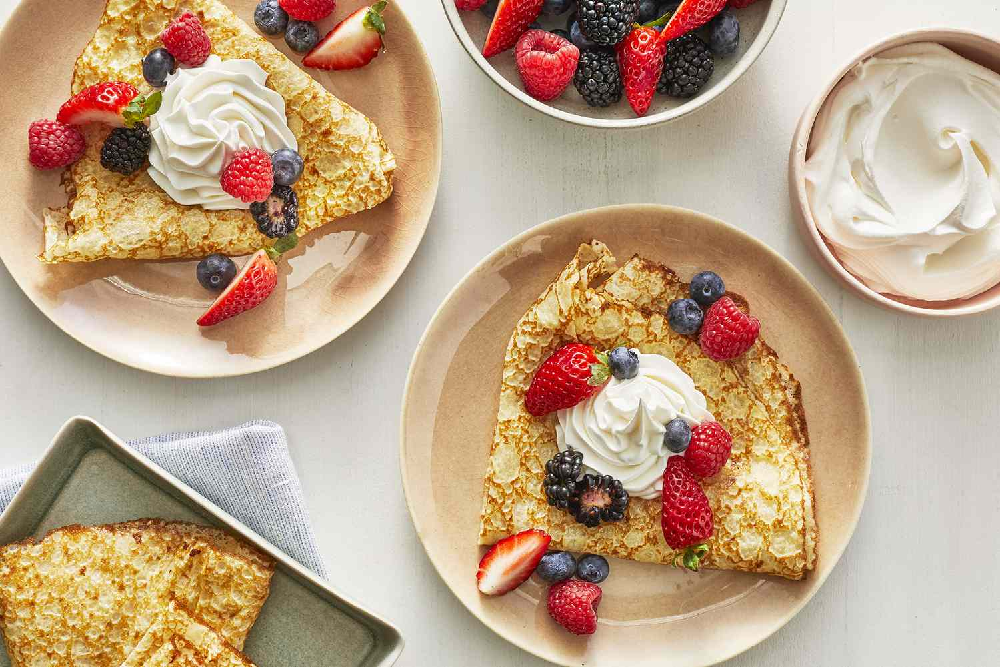

Clatite ca la mama acasa

|  | Clatite ca la mama acasa |
|
Clătite pufoase și delicioase. O rețetă pe care oricine o poate prepara. Este extrem de savuroasă și de rapidă. Cei dragi cu siguranță vor dori porție dublă sau chiar triplă. Lista de ingrediente este simplă și accesibilă oricui. Rețetă rapidă și delicioasă de clătite ca la mama acasă
Nimic nu se compară cu gustul mâncării de acasă, mai ales dacă este vorba despre un desert făcut de mâinile mamelor noastre. Este întotdeauna mai bun și mai sățios. De exemplu, clătitele. Clătitele au fost mereu considerate desertul copilăriei. Drept urmare, de fiecare dată când le savurezi, parcă te simți din nou copil și nu vrei să te mai oprești din mâncat. Pentru o rețetă similară, iată lista de ingrediente în rândurile următoare!
Pentru început, cerneți făina. Mai departe, spargeți ouăle peste ea și adăugați un praf de sare. Peste amestec turnați cantitatea de lapte și începeți să amestecați cu o lingură de lemn sau cu ajutorul unui mixer. Aluatul de clătite trebuie să aibă o textură similară cu cea de smântână sau cu gălbenușul de ou. Mai departe, adăugați untul topit, care în prealabil trebuie răcit. Se continuă cu restul de lapte dacă a mai rămas și, dacă observați cocoloașe, le puteți strecura printr-o sită. Nu în ultimul rând, dacă simțiți nevoia de ceva mai pufos, puteți completa totul cu griș. Puneți trei linguri de griș sau patru și veți vedea cum aluatul își va schimba aspectul, iar clătitele vor ieși mult mai moi decât de obicei. De asemenea, aluatul se va lăsa la odihnit pe parcursul a 30 de minute. Ulterior, se ia un polonic și se va întinde clătita, mișcând tigaia încinsă, unsă cu puțin ulei, dintr-o parte în alta. Când clătita este rumenită pe o parte, întoarceți-o și pe cealaltă. La final, clătitele se pot unge cu dulceață de afine, de vișine, de cireșe sau de gutui. Dacă nu dispuneți de acestea, puteți opta pentru brânză amestecată cu zahăr sau pentru ciocolată cu căpșuni sau banane.